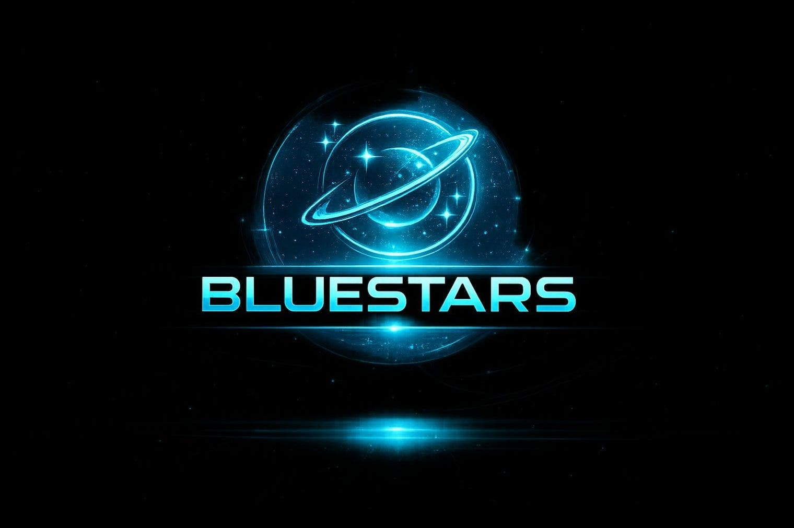
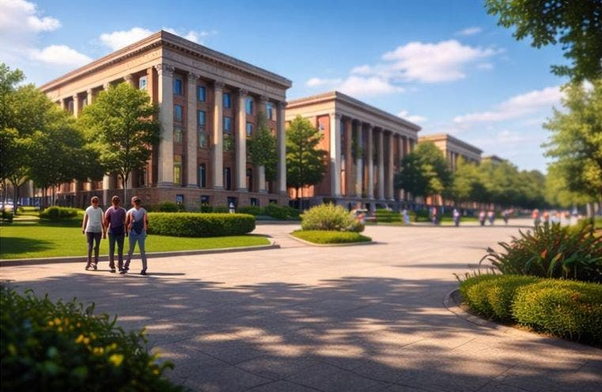
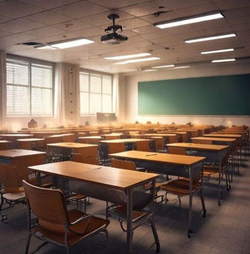
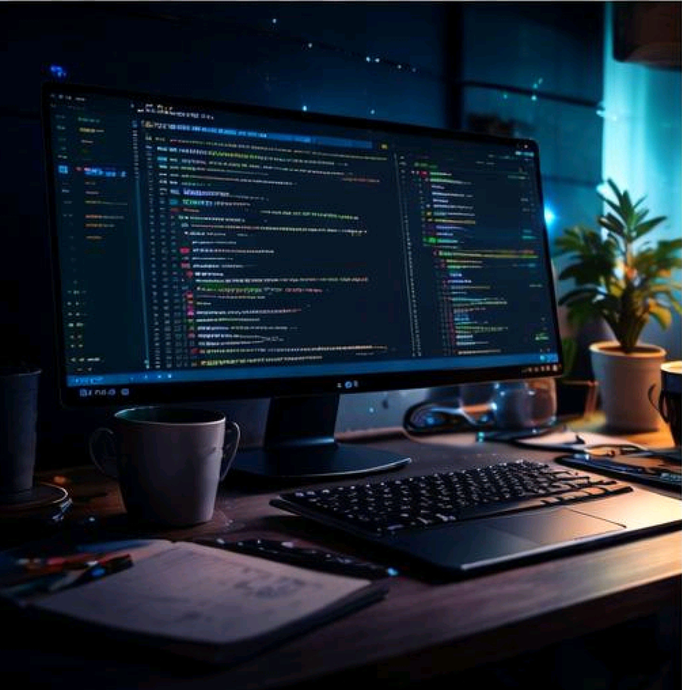
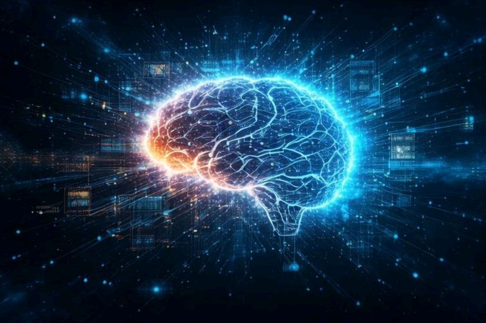
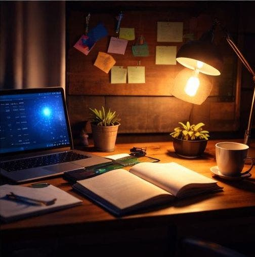

6:30 AM
Morning Motivation
The day starts with focus, intention, and preparation. Clear goals in the morning help us stay aligned, productive, and mentally ready to move forward.
NATIONAL LEVEL WEBOREEL AI HACKATHON
We are Bluestars, a team of students transforming daily learning, teamwork, coding, creativity, and ambition into a shared journey toward future-ready innovation.
Core Members
Shared Vision
Growth Mindset

OUR PROJECT STORY
This Weboreel transforms student life into an interactive digital experience. It reflects discipline, collaboration, experimentation, and the energy of a team building toward the future together.
OUR DAILY JOURNEY
Every stage of our day reflects learning, teamwork, and the belief that meaningful innovation grows through consistent effort.
The day starts with focus, intention, and preparation. Clear goals in the morning help us stay aligned, productive, and mentally ready to move forward.

College gives us an environment where ideas, ambition, and student energy meet. It is the place where our team’s learning journey is constantly shaped.

Every lesson builds our foundation. Concepts learned in class strengthen the critical thinking and technical clarity that support everything we create together.

This is where ideas turn into reality. Through coding, iteration, and implementation, our team converts vision into something real, interactive, and meaningful.

We explore future-facing technology, AI-driven ideas, and the possibilities that inspire us to think beyond the ordinary and build for tomorrow.

The day ends with reflection, planning, and a stronger sense of direction. Progress grows through teamwork, review, and the will to improve every step.
HOW WE BUILD TOGETHER
Our strength lies in shared ideas, thoughtful role distribution, creative execution, and constant refinement as a team.
We begin by shaping the core concept, purpose, and experience so every part of the project follows a strong shared direction.
Each member contributes through their strengths in design, content, logic, project support, research, and overall refinement.
We bring together visuals, storytelling, and development to turn an ordinary idea into an engaging digital experience.
Feedback and iteration help us polish the final result so that the project feels smoother, stronger, and more impactful.
WHY THIS MATTERS
This project shows that student life is not just routine. It is ambition, teamwork, learning, resilience, and the courage to build. Through Bluestars, we present everyday effort as an inspiring story of future innovators.
INTERACTIVE EXPERIENCE
Answer a few quick questions and find the type of learner, creator, or innovator you are.
Your innovation persona will appear here.
COMMUNITY INSIGHTS
These insights represent strong patterns seen in growth-focused students who build, collaborate, and dream bigger.
MEET BLUESTARS
A project becomes stronger when different strengths come together with one shared purpose.
Team Leader • Vision • UI • Story Direction
Led the concept, storytelling flow, project identity, and overall visual direction for Bluestars.
Development • Logic • Support
Contributed to implementation thinking, logical structure, and strengthening the project through collaborative support.
Content • Refinement • Team Contribution
Supported the experience through content refinement, alignment, and helping improve the overall project flow.
Research • Coordination • Support
Strengthened the project through support, contribution, coordination, and team-based execution across the final experience.